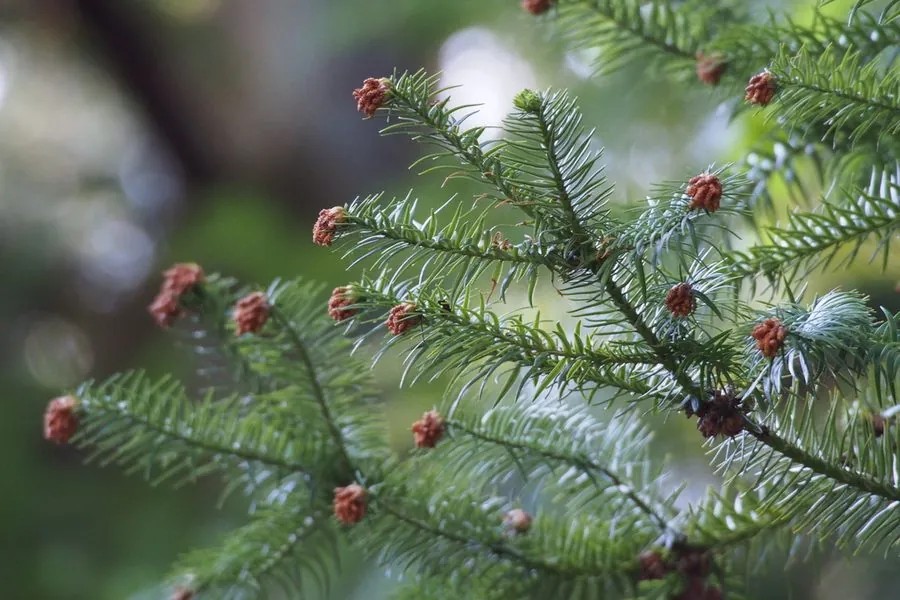

乔木 · 植物界
杉木 Cunninghamia lanceolata

中国南方最重要的速生用材树种之一，树干通直、木材芳香耐腐，成片营造的杉木林遍布亚热带丘陵山地。
- 分类
- 门裸子植物门纲松柏纲目松柏目科柏科属杉木属
- 栖息环境
- 海拔 200–1500 米的亚热带丘陵山地，喜温暖湿润、光照充足
- 地理分布
- 中国长江流域以南及华南、西南各省，为中国特有树种
- 保护级别
- 暂无评估；中国未列入国家重点保护野生植物名录
物种志
杉木为常绿针叶乔木，高可达 30 m，胸径可达 2.5 m，树干通直，树皮灰褐色、纵向浅裂并呈长条片状剥落；叶条状披针形，革质，长 2–6 cm，先端渐尖，边缘有细锯齿，在小枝上螺旋状排列，叶背有两条白色气孔带。雌雄同株，雄球花圆锥状、簇生于枝顶，雌球花球形；球果卵圆形，长 2.5–5 cm，成熟时褐色，种子具窄翅。
杉木是中国特有树种，分布于长江流域以南及华南、西南的丘陵山地，喜温暖湿润、光照充足，适宜深厚肥沃、排水良好的酸性红黄壤，生长迅速，是南方最重要的速生用材树种之一。木材纹理通直、芳香耐腐、不易虫蛀，是建筑、家具、桥梁与造船的良材；树皮可提取栲胶；根、皮与球果可入药。杉木栽培历史悠久，江西、福建、湖南等地的大片杉木林是重要的商品林资源。
形态与习性
- 株高可达 30 m，胸径可达 2.5 m
- 花期3–4 月，雄球花圆锥状
- 球果成熟10–11 月，长 2.5–5 cm
- 光照喜光，幼树稍耐阴
- 水分喜湿润，年降水量 1000–1800 mm
- 土壤深厚肥沃的酸性红黄壤
- 主要用途建筑与家具用材、树皮提取栲胶、根皮药用
趣味知识
- 杉木生长极快，20 年左右的杉木即可成材，是南方重要的速生用材树种。
- 杉木木材芳香、耐腐防虫，民间常用它制作房梁、家具与木桶。
- 杉木的叶片条状披针形、边缘有细锯齿，与松树的针叶形态明显不同。
- 中国栽培杉木已有上千年历史，江西、福建山区至今保存着成片杉木林。